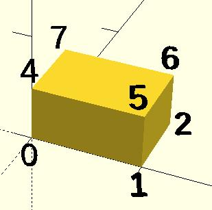

A polyhedron is the most general 3D primitive solid. It can be used to create any regular or irregular shape including those with concave as well as convex features. Curved surfaces are approximated by a series of flat surfaces.
polyhedron( points = [ [X0, Y0, Z0], [X1, Y1, Z1], ... ], triangles = [ [P0, P1, P2], ... ], convexity = N); // before 2014.03 polyhedron( points = [ [X0, Y0, Z0], [X1, Y1, Z1], ... ], faces = [ [P0, P1, P2, P3, ...], ... ], convexity = N); // 2014.03 & later
default values: polyhedron(); yields: polyhedron(points = undef, faces = undef, convexity = 1);
All faces must have points ordered in the same direction . OpenSCAD prefers clockwise when looking at each face from outside inward. The back is viewed from the back, the bottom from the bottom, etc.

unfolded cube faces
CubePoints = [ [ 0, 0, 0 ], //0 [ 10, 0, 0 ], //1 [ 10, 7, 0 ], //2 [ 0, 7, 0 ], //3 [ 0, 0, 5 ], //4 [ 10, 0, 5 ], //5 [ 10, 7, 5 ], //6 [ 0, 7, 5 ]]; //7 CubeFaces = [ [0,1,2,3], // bottom [4,5,1,0], // front [7,6,5,4], // top [5,6,2,1], // right [6,7,3,2], // back [7,4,0,3]]; // left polyhedron( CubePoints, CubeFaces );
equivalent descriptions of the bottom face [0,1,2,3], [0,1,2,3,0], [1,2,3,0], [2,3,0,1], [3,0,1,2], [0,1,2],[2,3,0], // 2 triangles with no overlap [1,2,3],[3,0,1], [1,2,3],[0,1,3],
A simple polyhedron, square base pyramid
polyhedron( points=[ [10,10,0],[10,-10,0],[-10,-10,0],[-10,10,0], // the four points at base [0,0,10] ], // the apex point faces=[ [0,1,4],[1,2,4],[2,3,4],[3,0,4], // each triangle side [1,0,3],[2,1,3] ] // two triangles for square base );
A polyhedron triangular prism
module prism(l, w, h){ polyhedron( points=[[0,0,0], [l,0,0], [l,w,0], [0,w,0], [0,w,h], [l,w,h]], faces=[[0,1,2,3],[5,4,3,2],[0,4,5,1],[0,3,4],[5,2,1]] ); // preview unfolded (do not include in your function z = 0.08; separation = 2; border = .2; translate([0,w+separation,0]) cube([l,w,z]); translate([0,w+separation+w+border,0]) cube([l,h,z]); translate([0,w+separation+w+border+h+border,0]) cube([l,sqrt(w*w+h*h),z]); translate([l+border,w+separation+w+border+h+border,0]) polyhedron( points=[[0,0,0],[h,0,0],[0,sqrt(w*w+h*h),0], [0,0,z],[h,0,z],[0,sqrt(w*w+h*h),z]], faces=[[0,1,2], [3,5,4], [0,3,4,1], [1,4,5,2], [2,5,3,0]] ); translate([0-border,w+separation+w+border+h+border,0]) polyhedron( points=[[0,0,0],[0-h,0,0],[0,sqrt(w*w+h*h),0], [0,0,z],[0-h,0,z],[0,sqrt(w*w+h*h),z]], faces=[[1,0,2],[5,3,4],[0,1,4,3],[1,2,5,4],[2,0,3,5]] ); } prism(10, 5, 3);
point numbers for cube
Created with the Personal Edition of HelpNDoc: Easy EBook and documentation generator